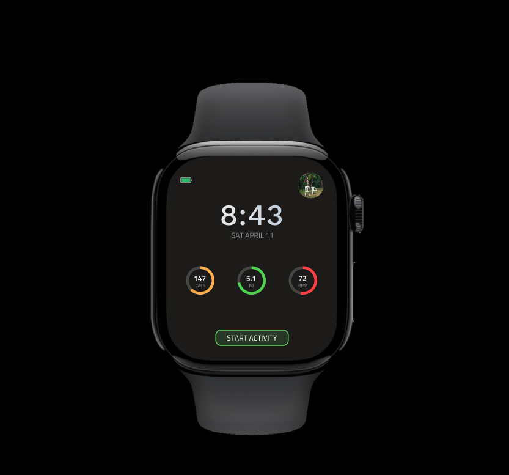
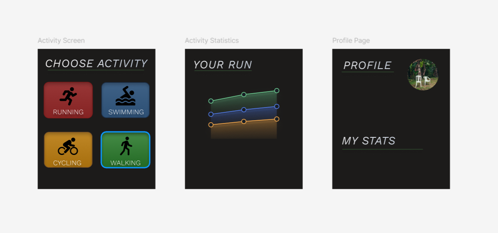
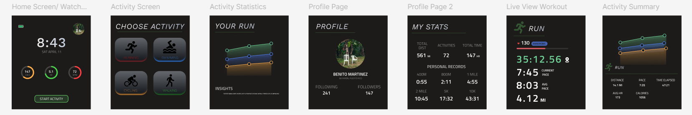

Fitness App for Smart Watch UI



Role:
Designer
This was a personal project to practice my versatility within UI devices. This was my first time designing an app for a smart watch specifically, so this project was a good way for me to practice app design on something that isn’t a smartphone. I used Figma to make these designs for a fitness app dedicated for smart watches. I found a brief online that detailed the features of the app and the style of it, and designed the UI for it keeping the brief and other fitness apps in mind. I focused on simplicity within the design process, given that watch UIs have limited screen space to work with.